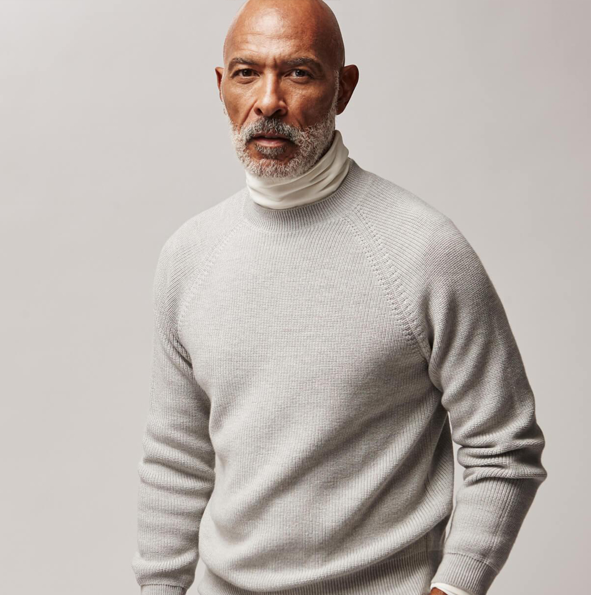

<section class="product-information">
    <div class="container container-narrow product-information__container">
        <div class="product-information__inner">
            <div class="product-information__left">
                <div class="product-information__gallery gallery__slider" data-mobile="false">
                    <div class="swiper-wrapper gallery__swiper-wrapper">
                        <div class="gallery__slide">
                            
                        </div>
                        <div class="gallery__slide">
                            
                        </div>
                    </div>
                </div>
            </div>
            <div class="product-information__right">
                <div class="product-information__right-inner">
                    <div class="product-info">
                        <h2 class="product-info__title">LUPETTO IN LIGHT GREY</h2>
                        <span class="product-info__price">$328</span>
                        <div class="product-info__selects">
                            <div class="product-info__select color-select">
                                <div class="custom-select custom-select--info">
                                    <span class="product-info__caption">COLOR:<span class="custom-select__top">LIGHT
                                            GREY</span>
                                    </span>
                                    <svg class="custom-select__icon" width="24" height="24" viewBox="0 0 24 24"
                                        fill="none" xmlns="http://www.w3.org/2000/svg">
                                        <path
                                            d="M3.51501 8.465L12 16.95L20.485 8.465L19.071 7.05L12 14.122L4.92901 7.05L3.51501 8.465Z"
                                            fill="#2E3A59" />
                                    </svg>
                                    <div class="custom-select__dropdown">
                                        <ul class="custom-select__list">
                                            <li class="custom-select__item" aria-label="Choice LODEN">LODEN</li>
                                            <li class="custom-select__item" aria-label="Choice ORANGE">ORANGE</li>
                                            <li class="custom-select__item" aria-label="Choice WHITE">WHITE</li>
                                            <li class="custom-select__item" aria-label="Choice NAVY">NAVY</li>
                                            <li class="custom-select__item" aria-label="Choice ROSE">ROSE</li>
                                            <li class="custom-select__item" aria-label="Choice CUMIN">CUMIN</li>
                                            <li class="custom-select__item" aria-label="Choice BROWN">BROWN</li>
                                            <li class="custom-select__item" aria-label="Choice LIGHT GREY">LIGHT GREY
                                            </li>
                                        </ul>
                                    </div>
                                </div>
                            </div>
                            <div class="product-info__select size-select">
                                <div class="custom-select custom-select--info">
                                    <span class="product-info__caption">SIZE:<span
                                            class="custom-select__top">SMALL</span></span>
                                    <svg class="custom-select__icon" width="24" height="24" viewBox="0 0 24 24"
                                        fill="none" xmlns="http://www.w3.org/2000/svg">
                                        <path
                                            d="M3.51501 8.465L12 16.95L20.485 8.465L19.071 7.05L12 14.122L4.92901 7.05L3.51501 8.465Z"
                                            fill="#2E3A59" />
                                    </svg>
                                    <div class="custom-select__dropdown">
                                        <ul class="custom-select__list">
                                            <li class="custom-select__item" aria-label="Choice SMALL">SMALL</li>
                                            <li class="custom-select__item" aria-label="Choice MEDIUM">MEDIUM</li>
                                            <li class="custom-select__item" aria-label="Choice LARGE">LARGE</li>
                                            <li class="custom-select__item" aria-label="Choice X-LARGE">X-LARGE</li>
                                        </ul>
                                    </div>
                                </div>
                            </div>
                        </div>
                    </div>
                    <div class="product-info__descr">
                        <p class="product-info__first-descr">In Italy, the mock neck sweater is known as a lupetto —
                            a
                            little
                            wolf.
                            Perfected for leisurely pursuits on and off piste, our signature sweater has heft,
                            character,
                            and
                            style
                        </p>
                        <div class="product-info__second-descr product-info__chars">
                            <p class="product-info__item"><span>Made in Northern Italy</span></p>
                            <p class="product-info__item"><span>Raglan sleeve for a relaxed feel</span></p>
                            <p class="product-info__item"><span>100% Superfine Tasmanian Merino Wool</span></p>
                            <p class="product-info__item"><span>17.5 Micron fibers</span></p>
                            <p class="product-info__item"><span>Polished, lustrous texture</span></p>
                            <p class="product-info__item"><span>½ Cardigan Shaker stitch</span></p>
                            <p class="product-info__item"><span>3/60s Combed Yarn</span></p>
                            <p class="product-info__item"><span>Lono is 6'1 and wearing a large sweater</span></p>
                        </div>
                    </div>
                    <div class="product-info__instruction">
                        <div class="product-info__sizing-instruction">
                            <h3 class="product-info__sizing-instruction">SIZING</h3>
                            <p>All measurements are in inches and taken of the body. For most accurate results
                                measure
                                next-to-skin. For a tighter fit, align with your suit size. For a more relaxed fit,
                                please
                                size up.
                            </p>
                        </div>
                        <div class="product-info__care-instruction">
                            <h3 class="product-info__sizing-instruction">CARE INSTRUCTIONS</h3>
                            <p>Dry clean or machine wash cold on gentle cycle and lay flay to dry.</p>
                        </div>
                    </div>
                    <button class="product-info__btn btn btn-reset" aria-label="add to cart">add to cart</button>
                </div>
            </div>
        </div>
    </div>
</section>